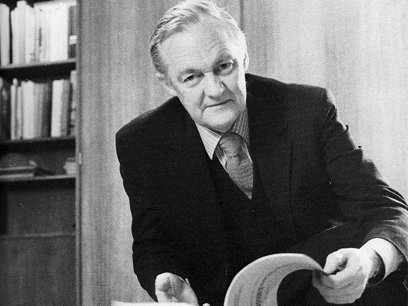

Churchill House
Churchill House, at 216 Northbourne Avenue in Braddon, was
designed by Robin Boyd for the Winston Churchill Memorial Trust
of Australia in 1969-70, and construction was completed in 1971.
It was Boyd’s last major commission, and he died prior to its
completion. It is one of a small number of larger designs
produced by Boyd and was Canberra’s first brutalist building.
Several components make up the complex. The main building, with
east and south wings; the separate north wing or pavilion; the
central pool and a rear carpark. The main building forms an L
shape and with the north wing it encloses a courtyard with a
large ornamental pool. The main building is three storeys high
with a four storey lift tower at the southeast corner. The north
wing and the carpark are two storeyed.
Although it has undergone some alterations over the years, the
building still displays key features of the brutalist style with
its large areas of blank wall and use off-form concrete, sloping
structural fins and precast concrete non-loadbearing wall
panels, precast fins for sun protection, and vertical slit
windows. Churchill House displays a fairly restrained form in
comparison with the major Canberra buildings that followed in
this style: Cameron Offices, National Gallery of Australia and
High Court of Australia.
Robin Boyd
Boyd is arguably the most influential architect there has been in
Australia. Through his writings Boyd inspired the general
community and through his architecture he has become an
acknowledged leader in the design and architectural professions.
He was a renowned Victorian architect, author, critic, and public
educator in the 50s and 60s, a leader in Melbourne’s Modern
Architecture movement, a visionary in urban design, and outspoken
on the ‘Australian Identity’.

Read more about Robin Boyd
History
Churchill House was built by the Winston Churchill Memorial Trust of Australia. The Trust began
consideration of erecting a building of its own in 1967 and formed a building committee in 1968.
In 1969 it acquired a lease for land on Northbourne Avenue, the current site, and engaged the
architect Robin Boyd to design the building.
The building was to provide offices for the Trust and in addition was to provide rental office
accommodation for commercial tenants as a means of generating income for the Trust.
 Read more about the history of the Churchill house
Read more about the history of the Churchill house
Design
Churchill House was designed by Robin Boyd for the Winston Churchill Memorial Trust of Australia
in 1969-70 and construction was completed in 1971. The building is an example of the Late
Twentieth-Century Brutalist Style (1960-) with its large areas of blank wall and off-form
concrete.
The complex comprises a number of components: the main building with its east and south wings,
the separate north wing or pavilion, the pool and the rear carpark. The main building forms an L
shape in plan, and with the north wing it encloses on three sides a courtyard in which the pool
is located.
 Read more about the design of Churchill house
Read more about the design of Churchill house

Statement of Significance
Churchill House is a good example of the Late Twentieth Century Brutalist style, (1960-),
displaying several key features as follows:
- Large areas of blank wall, especially the west wall of the south wing.
- Off-form concrete, such as the west wall of the south wing and the spandrels to the
south and east wings.
In addition, it displays a number of the other features of this style including: sloping
structural fins, precast concrete non-loadbearing wall panels, precast fins for sun
protection,
and vertical slit windows.
Churchill House is one of several Canberra examples of this style,
and one of only two which display a restrained form reflecting, perhaps, a more conservative
approach to the style because of the intended office use.
The architecture of this building may contribute to the education of designers in their
understanding of Late Twentieth-Century Architectural Styles.Churchill House has interest
for its association with the prominent architect, Robin Boyd. The
building was his last major commission.